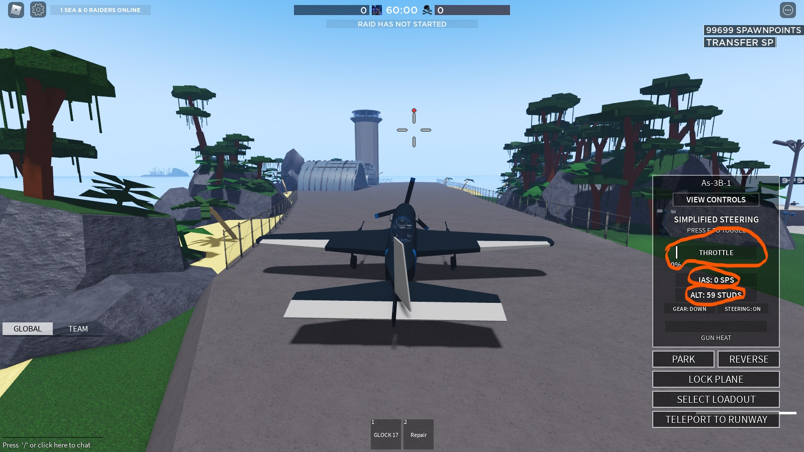
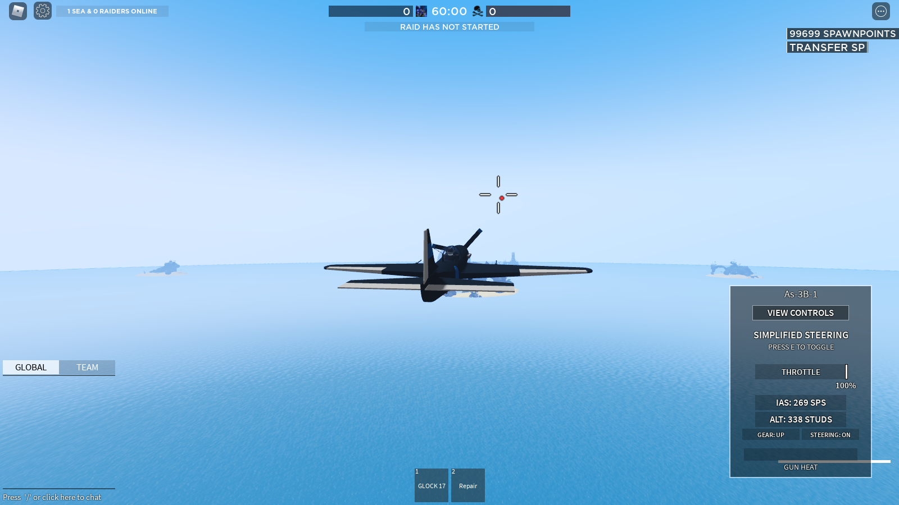
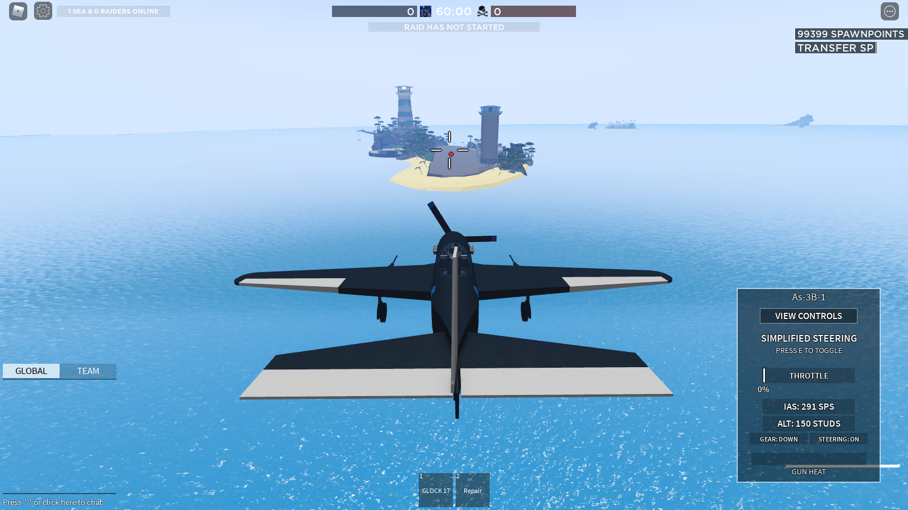
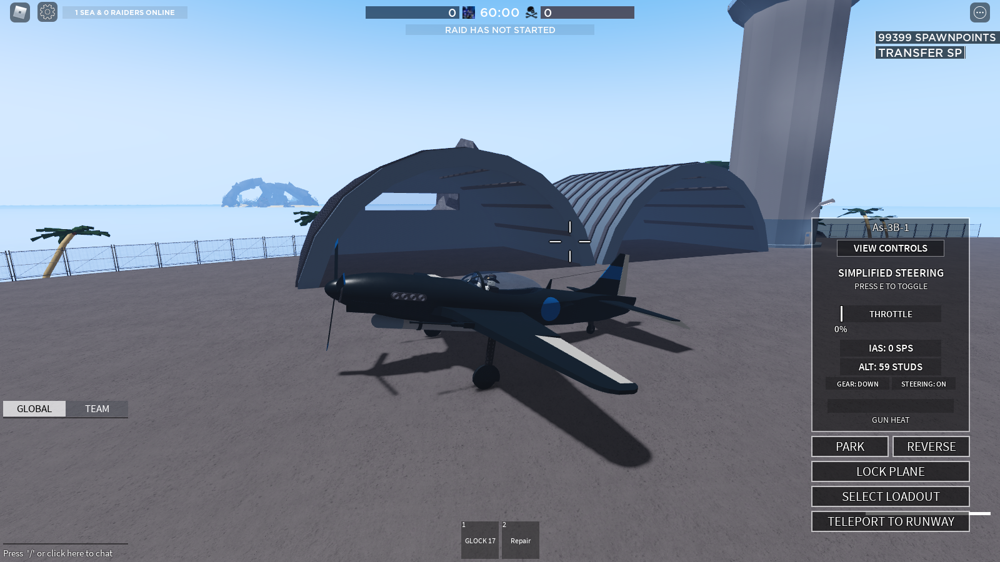

How to fly a plane in Navy Simulator
Hello pontential pilot. Just got your plane gamepass? Greate! But theres one problem.
You dont know how to land, or takeoff, or even shoot down another plane. Yeah. Thats
not going to... fly. Well, here I will provide the materials needed to acomplish your
task.
Taking off

Here we are at the runway. Our goal is to get our plane into the air. One problem. We dont know how to do that.
- First lets turn our engine on. Press y to start your engine
- Ok, now the engine is on. Now what? Well we dont want to go straight up into the air and stall. Thats not good, so position the top part of the reticle just below the red dot, and point your nose straight down the runway
- Finnaly, hold down W to increase throttle, watch the gui on the bottom right to see your speed (ias) throttle, and height(studs). Also make sure to pull up your gears by pressing G!

In the air!

Now this is podraceing, I mean falling with style, I mean.... flying. Your in the air, congratualations, but now you want to go back down to your friends.
How do you do that with out crashing horribly?
- First we are gonna want to slow down, watch your throttle to slow down to around 65%. Make sure your below 300 IAS and above 80 IAS, because thats when you turn into a car instead of a plane.
- Now, allign your self with the runway and lower your gears, and decrease your altitude to a similar height of the runway.
- when your close to the runway, lower throttle all the way down to 0% and bring your front two gears directly on too the runway, hold q to break and slow yourself down.
- I cant watch. Wait. You made it??? Great! Now we can learn to fight!

